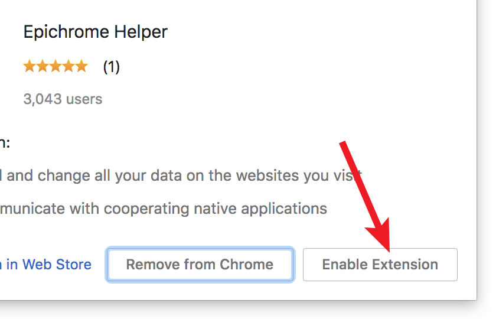
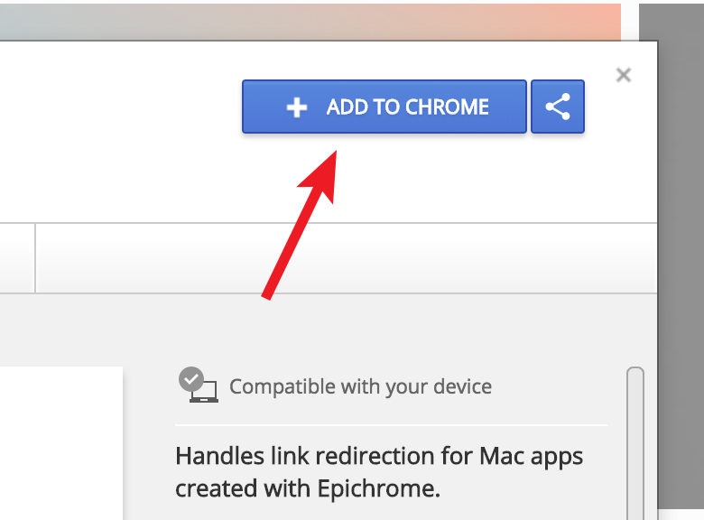

Your new app is almost ready to use, but due to Chrome’s security you need to manually enable the Epichrome Helper extension if you want link redirection and the other features it adds.
| Method 1: | |
| Within a few seconds of launch, an orange exclamation point should appear to the right side of your location bar. Click it and select “New extension added (Epichrome Helper)” from the drop-down menu. (Don’t click the “Set as default” button just below unless you really want this app to be your default browser.) |  |
| A window will pop up with info about Epichrome Helper. Click the Enable Extension button (or you can remove Epichrome Helper with the other button). |  |
| Method 2: | |
| If the exclamation point doesn’t appear, you can select Extensions from the Window menu... |  |
| ...and use the on/off slider to enable Epichrome Helper. |  |
| Method 3: | |
| If for some reason Epichrome Helper wasn’t automatically installed, or if you accidentally delete it, you can add it to Chrome from the Chrome Web Store using this link. |  |
When you’re done, restart this app and you’ll be off and running! If you have any issues, please report them here. Enjoy!